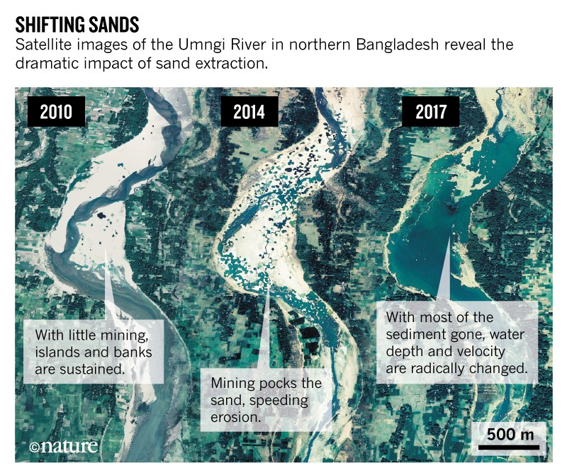

4 Anthropocene
“Political ecology is the product of our inscription in the capitalocene. Anthropocene is an idealist and ideological support of capitalism.” (Matthew Fliesfeder)
Note
Canary Island Promotion:
We only know 20% of the Planet Earth
Humans only make up 0.01% of terrestrial life
We have only discovered 15% ofliving species
81% of the seabed is still unkown to us????
4.1 Human Self-Awareness
Austin
If it seems frivolous to propose the solution to our problems is some new ‘Age’, as if such a thing might be produced to order, consider that the momentous recognition of the Anthropoceneis exactly the sort of event that might induce an Age. The crystallizing of the Anthropocene is a stunning milestone in the history of human self-awareness – ‘Oh, I see, we’re that big!’ Big enough to change planetary processes. Big enough that Earth is not the immutable backdrop we assumed it to be. Possibly, the only feasible response to such a profound reappraisal of our context is an equiproportional change in human cognition and self-organization. Indeed, with simultaneous advances in Earth sciences and neurosciences, our sense of the world and of the brain we use to navigate it, is changing rapidly and dramatically, with us sandwiched in between. It is impossible to imagine that human beings will not be deeply changed by current events.
Austin (2021) The Matrix of the Emissary - Market Primacy and The Sustainability Cris
is
4.2 Material Footprint
4.2.1 MFA
Abstract Krausman: The growing extraction of natural resources and the waste and emissions resulting from their use are directly or indirectly responsible for human- ity approaching or even surpassing critical planetary boundaries. A sound knowledge base of society’s metabolism, i.e., the physical exchange pro- cesses between society and its natural environment and the production and consumption processes involved, is essential to develop strategies for more sustainable resource use. Economy-wide material flow accounting (MFA) is a framework that provides consistent compilations of the material inputs to national economies, changes in material stocks within the economic system, and material outputs to other economies and the environment. We present the conceptual foundations of MFA and derived indicators and review the current state of knowledge of global patterns and trends of extraction, trade, and use of materials. We discuss the relation of material use and economic development and the decoupling of material use from economic growth in the context of sustainable resource use policies.
4.2.2 EU28 Footprint
Abstract Giljum: In the context of the transformation toward a “green economy,” issues related to natural resource use have rapidly increased in importance in European and international policy debates. The large number of studies applying economy-wide material flow analysis so far mostly produced aggregated national indicators, making the results difficult to connect to policies, which are often designed for single sectors or consumption areas. This paper provides a detailed assessment of the composition of EU’s material foot- print in its global context, aiming at identifying the main product groups contributing to overall material consumption and specifying the geographical sources for the raw materials required to satisfy EU’s final demand. Based on multi-regional input–output (MRIO) modeling, we apply production layer decomposition to assess supply chains and their structural changes from 1995 to 2011. The global MRIO database used in this study is EXIOBASE 3, which disaggregates 200 products and 163 industries, of which 33 represent material extraction sectors. By that means, we increase the level of detail to a degree where policies can more easily connect to. We find that the generally grow- ing material footprint of the EU was characterized by a dramatic shift regarding the origin of raw materials, with the share of materials extracted within the EU territory falling from 68 % in 1995 to 35 % in 2011. In 2011, raw materials extracted in China to produce exports to the EU already contributed an equal share to EU’s material footprint as material extraction within the EU itself. Import dependency is most critical for the material group of metal ores, with only 13 % of all metals required as inputs to EU final demand stemming from within the EU. Regarding product composition, construction was confirmed as the most important sector contributing to the material footprint, fol- lowed by the group of manufacturing products based on biomass. Materials embodied in service sector activities together contributed a quarter to the total material footprint in 2011, making services an important, but currently disregarded area for European resource policies. We also find that supply chain structures became more complex over time, with a growing part located outside the EU territory.
Krausman (2017) MFA Material Flow Accounting (pdf)
Giljum (2016) MRIO Based Material Footprint Assessment (pdf)
Max Roser tweeted the following text: “Material Footprint’ is a terrible metric, but it is unfortunately used as one of the indicators of the UN’s Sustainable Development Goals. A metric that allows you to offset the use of a ton of coal by using one less ton of sand should really not have that status.” (1) In the following discussion he said that we should: “stop reporting environmental impact in this way.” (2) and that he finds “Equal weights for fossil fuels and stones […] ethically absolutely horrible.” (3) To make this point, he referred to a recent publication, comparing and disaggregating the EU’s overall material footprint (MF) between 1995 and 2011, and more specifically, to one apparent substitution of clay and sand (decreased) with coal use (increased by roughly the same amount)
‘Material Footprint’ seems to me a bad metric for our impact on the environment. Some resource use is much more harmful and to treat a kg of sand just like a kg of coal is a terrible idea. To simply sum up their weight hides that resource use that has the worst impact.
The usefulness of aggregate material flow indicators: their purpose is to study the social metabolism, which is the material scale, composition, and pattern of the human-environment interaction
f we look beyond Roser’s blanket rejection of MF and at available scientific publications, we find that MF is actually a useful proxy for aggregate environmental pressures. This is simply because all material extraction (be it biomass, metals, fossil fuels or non-metal minerals) has some impact (7). So, if we measure MF and environmental impacts separately, we would expect to find a correlation between the two. This is exactly what happens. MF is highly correlated with other indicators for environmental pressure, such as carbon dioxide and ecological footprint (6). Also, as Krausmann et al. state (8, see also 9), material use (here domestic) correlates well with more complex indicators such as environmentally-weighted material use, accounting for different impacts of the respective material categories. Another reason why MF is a useful indicator is its simplicity while being representative. Indeed, Steinmann et al. (10) assessed 976 products and found that (p. 1) “the resource footprints [here material (excl. energy and biomass), energy, land, and water] accounted for >90% of the variation in the damage footprints. […] Our results indicate that relatively simple resource footprints are highly representative of damage to human health and biodiversity”. Finally, Voet et al. (11) reach similar conclusions (p. 130): “if we compare environmental impact with DMC [Domestic Material Consumption], we can conclude that the contribution to the environmental pressure and the contribution to the DMC is not so different for these [resource] categories”. Thus, MF captures important connections between human extractive activity and environmental pressures quite well on an aggregate level, and this in a simple and understandable way.
Lorenz Keyser - Reply to Max Roser
(??? Twitter Thread)(https://twitter.com/LorenzClimate/status/1357810876410175492)
4.2.3 Global human-made mass exceeds all living biomass
Memo:
At the beginning of the twentieth century, anthropogenic mass was equal to only 3% of global biomass. About 120 years later, in 2020, anthropogenic mass is exceeding overall biomass in the world.
As the global effect of humanity accelerates, it is becoming ever more imperative to quantitatively assess and monitor the material flows of our socioeconomic system, also known as the socioeconomic metabolism. This quantification is at the heart of the economy-wide material flow analysis framework, under the field of industrial ecology, which is based on mass balance accounting.
Humanity has become a dominant force in shaping the face of Earth. We are in the Anthropocene. The overall living biomass on Earth currently equals approximately 1.1 teratonnes. The anthropogenic mass has recently doubled roughly every 20years. The Earth is exactly at the crossover point. The antropogenic mass will surpass all other global living biomass in 2020. Each week more than the bodyweight of all humans of antropogenic mass is produced. This quantification of the human enterprise gives a mass-based quantitative and symbolic characterizatio
The global mass of of produced plastic is greater than the overall mass of all terrestrial and marine animals combined.
| Living Biomass | Human-mademass |
|---|---|
| Animals 4 Gt | Plastic 8 Gt |
| Trees 900 Gt | Buildings 1100 Gt |
The mass of humans is only about 0.01% of global biomass. Since the first agricultural revolution, humanity has roughly halved the mass of plant. While modern agriculture utilizes an increasing land area for growing crops, the total mass of domesticated crops (about 0.01 Tt)11 is vastly outweighed by the loss of plant mass resulting from deforestation,forest management and other land-use changes. These trends in global biomass have affected the carbon cycle and human health. Additional human actions, including livestock husbandry, hunting and overfishing, have also strongly affected the masses of various other taxa.
Continuous increases in anthropogenic mass, peaking at over 5% per year, mark the period immediately following World War II. This period, frequently termed the ‘Great Acceleration’, is characterized by enhanced consumption and urban development
Quantifying the human appropriation of net primary production, have focused on the allocation of the biosphere productivity flow for human usage. The anthropogenic mass does not arise out of the biomass stock but from the transformation of the orders-of-magnitude higher stock of mostly rocks and minerals. In doing so, humanity is converting near-surface geological deposits into a socially useful form, with wide implications for natural habitats, biodiversity, and various climatic and biogeochemical cycles.
4.2.4 Sand Mining
Sand crisis: mafias thrive as shortages loom.
Demand for construction sand is rising faster than supply, pushing even countries in the Middle East to import it from as far away as Australia and Canada.
Sand, a building block of modern life that sits at the heart of a destructive and sometimes illegal industry, is in increasingly short supply — and nobody knows how soon it will run out.
Sand is the most used material on the planet but also one of the least well monitored. Unlike most other commodities, policymakers only have rough estimates of how much of it is used each year. A landmark report from the UN Environment Program (UNEP) in 2019 had to rely on data for cement — which sand and gravel are mixed with to make concrete — to land on a ballpark figure of 50 billion tons.
Sand mining destroys habitats, dirties rivers and erodes beaches, many of which are already losing ground to rising sea levels. When miners dig out layers of sand, riverbanks become less stable. The pollution and acidity can kill fish and leave less water for people and crops. The problem is made worse when dams upstream prevent sediments from replenishing the river.
Desert sand grains are too smooth to be useful, and most of the angular sand that is suitable for industry comes from rivers (less than 1% of the world’s land)5. This extraction of sand and gravel has far-reaching impacts on ecology, infrastructure and the livelihoods of the 3 billion people who live along rivers

Extraction of sand and gravel from active sources can cause great environmental, social and economic harm, whereas extraction from passive sources has fewer environmental impacts. For example, in the Mekong delta, the Vietnamese government estimates that nearly 500,000 people will need to be moved away from river banks that are collapsing as a result of sand mining in the channel. In the Ganges River in northern India, eroded river banks have destroyed the nesting and breeding habitats of fish-eating gharial crocodiles (Gavialis gangeticus), a critically endangered species with only around 200 adults left in the wild in northern India and Nepal.